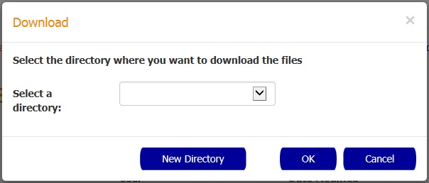

How to display document details
In order to display the document details you need to click the desired result in the table. After the click the Search Details page is going to be displayed.
How to download a set of documents
In order to download a set of documents you need to select the checkbox of the documents you want to export and
click the Download button.

In the Download popup select the predefined destination folder by selecting a folder name in the Destination folder dropdown, and then confirm the action by pressing the OK button.
You can also create a new folder by selecting the New Directory button and entering the new folder name in the New Directory popup.

How to add results to a collection
In order to create a new collection you need to select the checkbox of the documents you want to save and
click the Add to Collection button.
In the New Collection popup enter the name and notes for the new collection and then confirm the action by pressing the OK button.
How to change the document status
In order to change the status of a document you need to select the checkbox of the documents you want to update and
click the Change Status button.
In the Change Status popup select the new status for the documents and then confirm the action by pressing the OK button.
How to change the document legal hold
In order to change the legal hold of a document, you need to select the checkbox of the documents you want to update and
click the Legal Hold button.
In the Change Legal Hold popup select the new Hold status for the documents and then confirm the action by pressing the OK button.
How to save a new search
In order to save the current search, click the Save Search button.
In the Save Search popup enter a name to identify the new saved search and then confirm the action by pressing the OK button.
How to save a new search
In order to save the current search, click the Save Search button.
In the Save Search popup enter a name to identify the new saved search and then confirm the action by pressing the OK button.
How to save a new search
In order to save the current search, click the Save Search button.
In the Save Search popup enter a name to identify the new saved search and then confirm the action by pressing the OK button.
How to filter by content source (Global searches only)
In order to filter documents by a specific content source, click the desired content source link button.
This feature is only available if you search using the Global Search form